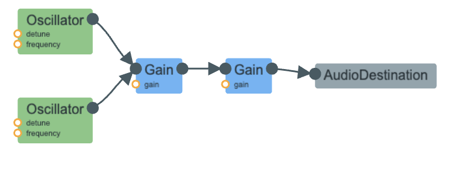

Worked with Matthew in class initially for part 1.
I created the DTMF dial tones. This was a simple choice, yes, but felt like the right choice for me considering a lot of time spent on part 1. I referenced my phone’s sound when dialing a number to ensure I had the right sound.
Process & Mapping
My process started out very simple. I created a mapping of the two frequencies that corresponded to each dial tone since a dial tone is just two specific frequencies playing at once.
const dtmfMap = {
'1': [697, 1209], '2': [697, 1336], '3': [697, 1477], 'A': [697, 1633],
'4': [770, 1209], '5': [770, 1336], '6': [770, 1477], 'B': [770, 1633],
'7': [852, 1209], '8': [852, 1336], '9': [852, 1477], 'C': [852, 1633],
'*': [941, 1209], '0': [941, 1336], '#': [941, 1477], 'D': [941, 1633]
};I played around with creating two sine wave oscillators for one dial tone to start out and playing them at the same time. This stacking of frequencies on top of each other is, of course, additive synthesis which is necessary to get our “Dual Tone Multi Frequency.”
Implementation
Once I knew I had the right sound, I could connect buttons to their corresponding frequencies, so that when the user presses a key, the correct frequencies are extracted from the map and used to create two oscillators. This can be seen in the playTone function:
freqs.forEach(freq => {
const osc = audioCtx.createOscillator();
osc.type = 'sine';
osc.frequency.setValueAtTime(freq, audioCtx.currentTime);
osc.connect(currentOscGain);
osc.start();
oscillators.push(osc);
});I loop through the two frequencies, create an oscillator for each, set them to 'sine', and start them. I push them to an oscillators array so I can keep track of them and stop them later. Of course, gain nodes were necessary to prevent clipping and popping.
currentOscGain.gain.setTargetAtTime(1, audioCtx.currentTime, 0.0015); //up
currentOscGain.gain.setTargetAtTime(0, audioCtx.currentTime, 0.002); //downDesign Choices
I did have to spend some time listening to my phone’s dial tones and figuring out how fast or slow the values should ramp up or down. Initially my ramps were too smooth and I noticed that my phone’s dial tones are more abrupt. While not completely being the undesirable “pops” that come from no ramping, real dial tones had more of a popping noise then I initially implemented, so I had to take a closer listen and experiment. Ramping times ended up being a lot shorter than I originally had, and I had to find the sweet spot that didn’t sound too smooth or like I hadn’t ramped the amplitudes at all. So for this project, popping was more of a design choice.
Audio Signal Flow
We have two oscillators of different frequencies, a gain node used to ramp values, and a gain node to control overall volume. When a different dial tone is pressed, any oscillators still playing are ramped down, and two new oscillators come in.

Ringing Simulation
To make this a bit more interesting, I also decided to add the sound of a ringing phone. After the user types in 10 digits, they “call” that number, and I create a ringing tone with two oscillators in the same way that I created the dial tones. The ringing sound uses frequencies 440hz and 480hz.
display.innerText = 'RINGING...';
playTone([440, 480], 0.1);